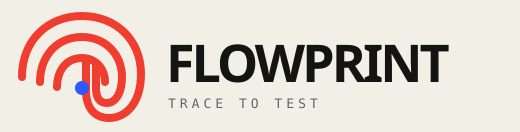

GitHub by Diego Pacheco (diegopacheco.github.io)READY
BROWSER FIELD RECORDER
Leave a trail.
Ship the test.
Turn a real browser journey into a clean Playwright test without breaking your rhythm.
Recorded trail
0 marks
01
Start recording, then use the page normally. Your actions and requests will appear here.
Playwright test
Start a recording to create a test.